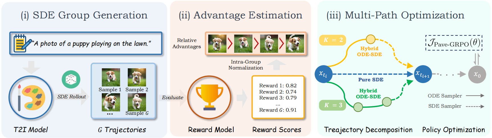
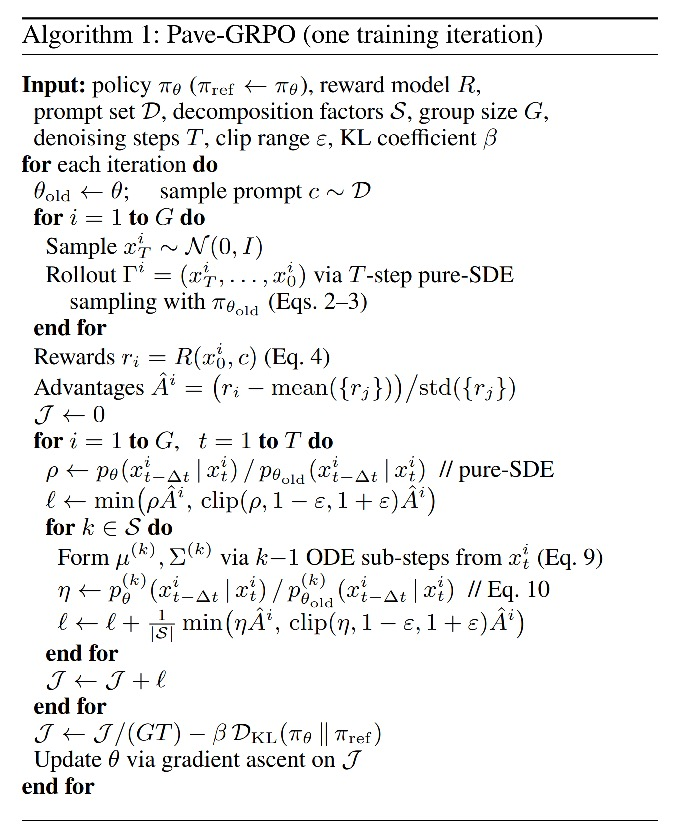
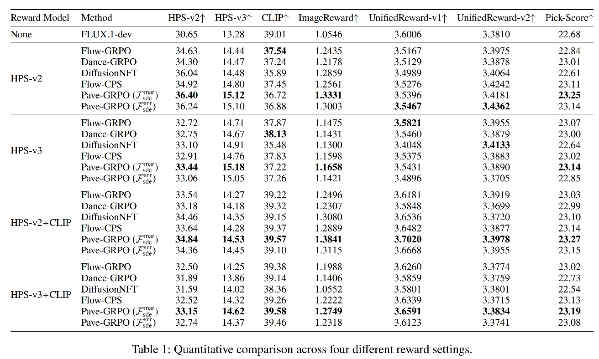
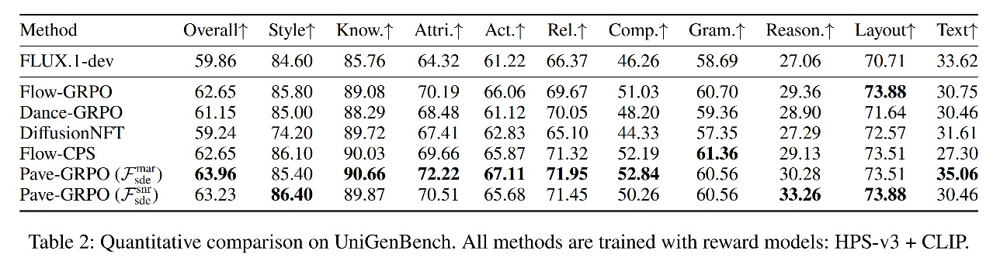
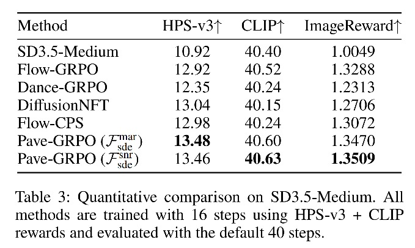
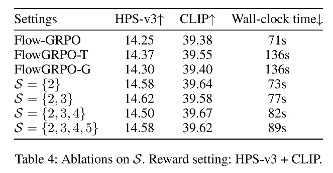
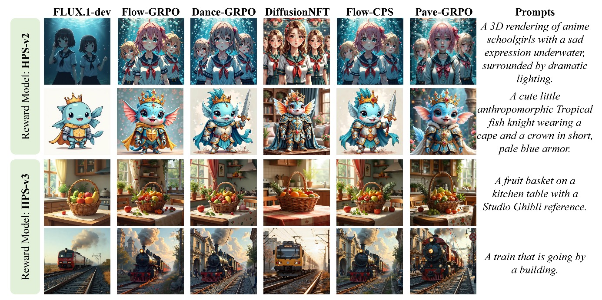

Group Relative Policy Optimization (GRPO) has emerged as an effective paradigm for aligning flow-based generative models with human preferences. However, the high cost of group rollouts forces existing methods to use very few denoising steps, resulting in sparse temporal supervision and leaving most intermediate stages without direct reward guidance. To address this, we propose Pave-GRPO, which reformulates the GRPO objective through principled average velocity decomposition. Rather than generating expensive high-step rollouts, we maintain efficient few-step group sampling but decompose each coarse transition into an equivalent ensemble of finer sub-trajectories spanning multiple intermediate timesteps, propagating reward feedback to a denser set of temporal stages for more comprehensive preference alignment. Crucially, this incurs no additional stochastic rollout generation or reward evaluation: the decomposed sub-trajectories are constructed analytically around the observed transitions, requiring only a small number of extra velocity-network evaluations during the policy update. This design offers two benefits: (i) rollout-free horizon expansion: through the direct reuse of few-step group samples and their associated rewards, Pave-GRPO significantly broadens the effective optimization scope under a fixed sampling and reward budget; and (ii) comprehensive temporal supervision: by equivalently decomposing an instantaneous velocity target into a multi-timestep ensemble, it distributes reward signals across more intermediate stages of the denoising process, enabling finer-grained and more thorough preference optimization.







@article{ling2026pave,
title={Pave-GRPO: Beyond Instantaneous Guidance through Principled Average Velocity Decomposition},
author={Ling, Pengyang and Bu, Jiazi and Zhou, Yujie and Wang, Yibin and Hu, Zhenyu and Zhang, Zihan and Jin, Yi and Chen, Huaian and Zang, Yuhang},
journal={arXiv preprint arXiv:2606.01636},
year={2026}
}